Bilan 2025
Trois bougies déjà ! Oui, en 2025, nous fêtons notre troisième anniversaire.
Le Brick Winter Burrow est toujours bien vivant : le train avec sa vieille locomotive tourne sans relâche, la montagne tient bon et ne s'effondre pas, et la famille de minifigs ne cesse de grandir.
Cette troisième année a été riche en découvertes. Nous avons tenté plusieurs choses sur des sujets qui nous tiennent à cœur pour notre diorama ; illuminations, motorisation et transport, pour n'en citer que trois.
Nos expérimentations ont plus ou moins porté leurs fruits. Peut-être avons-nous visé trop haut en voulant tout réussir d'un coup, sans feuille de route vraiment réaliste.
Et c'est justement ça qui rend la suite excitante : nous avons trois ans d'expérience derrière nous et l'envie de continuer à bâtir. L'objectif ? Avancer encore plus loin, en retrouvant un plaisir que nous avions perdu, ainsi qu'avec une organisation plus rationnelle, le tout sans stress.
{kind=link}
Introspection nécessaire
Lorsque nous avons commencé à rédiger les lignes qui suivent, il serait faux de dire que la tâche fut simple. Ce n'était pourtant pas la première fois que nous nous attelions à un tel exercice (cf. articles "Bilan 2023" et "Bilan 2024").
L'année 2025 a été particulièrement chargée en émotions. Elle nous a heureusement apporté son lot de réussites, notamment avec notre participation au "Boc'N'Geek 2025"1 (cf. article "Retour exposition : Boc'N'Geek 2025"), mais ces douze derniers mois ont surtout été difficiles et éprouvants à bien des égards.
{kind=link}
Mettre des mots sur ce que nous avons ressenti n'a pas été évident, mais il nous semblait important de le faire.
Revenir sur cette année, c'était aussi pour nous l'occasion de nous questionner sur notre relation au Brick Winter Burrow, sur la façon dont nous souhaitons désormais travailler et, pour être honnêtes, sur ce que la brique représente vraiment pour nous. Parce que lorsque la frustration, le stress, voire un certain dégoût finissent par s'inviter régulièrement dans un projet, il faut savoir s'arrêter et se demander comment avancer autrement.
Début d'année pleine d'ambitions
2025 avait pourtant tout d'un récit qui s'annonçait positif. Dès les premiers jours de janvier, nous étions déjà motivés, alors qu'à la même période les années précédentes, nos LEGO restaient à prendre la poussière.
Notre dernière participation à un évènement public avait été un franc succès (cf. article "Retour exposition : Cahors Bricks Expo 2024") et nous voulions continuer d'améliorer notre Brick Winter Burrow. Toujours plus grand, plus impressionnant.
Focus sur la motorisation
Nous avions décidé de nous focaliser sur la vie de notre diorama, lui donner plus d'animations, davantage de mouvements. La motorisation de notre village était donc notre nouvel objectif.
Plutôt que de réinventer la roue, nous avons commencé par réaliser un état de l'art et listé les possibilités qui s'offraient à nous. Pour n'en citer que quelques-unes :
- Comment faire bouger nos chères minifigs sur notre patinoire ?
- Comment animer le magnifique "Winter Village Market" (Set
10235) ? - Pourquoi ne pas mettre en place un passage à niveaux automatique pour notre train ?


Rencontre avec Alex Winter Village
Aussi, nous avons profité de ces premiers mois d'hiver pour converser avec l'un de nos modèles et mentors, Alex Winter Village (Instagram, Facebook, YouTube).
Au-delà de sa grande gentillesse, Alex a toujours été ravi de nous montrer ses secrets, comment il animait son diorama. Son partage de connaissances et de ses techniques lui ont même valu un article sur le site BrickNerd intitulé "Christmas in July, A Motorized Whimsical Winter Village"2.
Nous avons eu la chance de pouvoir le rencontrer en personne lors de la "LegSplay 2025"3 en février. Il nous a invité sur son stand et nous avons pu admirer son chef-d'œuvre d'encore plus prêt, observer tous les détails et la minutie avec laquelle il avait perfectionné ses animations.
{kind=link}
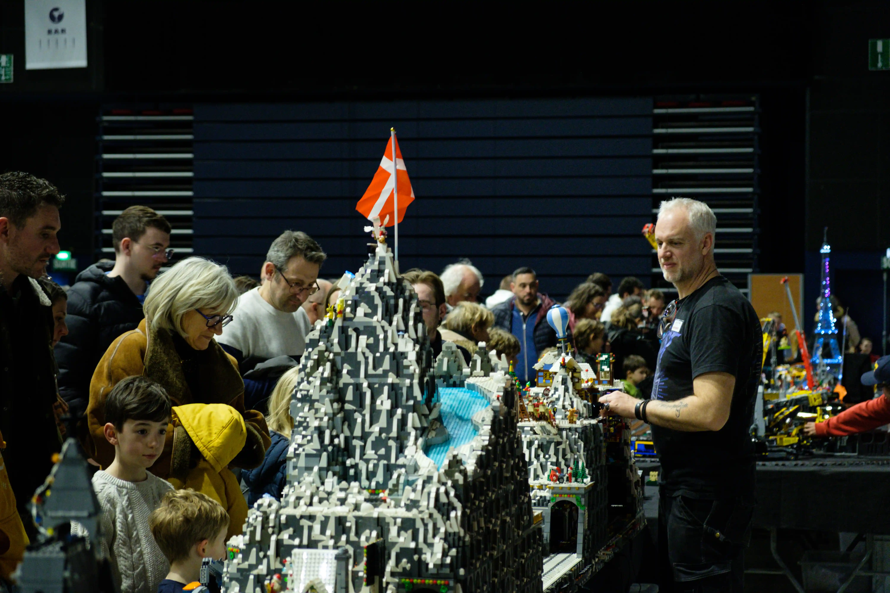
{kind=link}
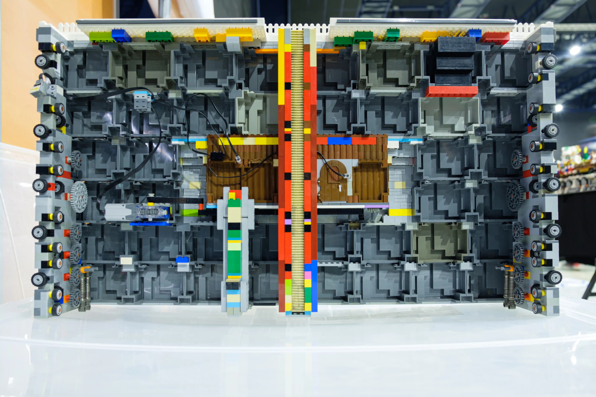
Investissements en pagaille
De retour chez nous, nous étions motivés comme jamais pour nous mettre au travail.
Plus de pièces
Persuadés qu'il nous fallait tout concevoir en version physique, nous avions besoin de pièces de la gamme Technic, notre stock déjà limité ne permettant pas d'expérimenter comme nous l'aurions souhaité. Nous nous sommes donc mis en quête d'un modèle d'occasion suffisamment riche en références et proposé à un prix raisonnable.
Notre choix s'est finalement porté sur la "Rough Terrain Crane" (Set 42082), qui ne compte pas moins de 4 000 pièces4. Elle demeure d'ailleurs encore aujourd'hui l'un des plus imposants modèles de la gamme Technic5,6.
{kind=link}
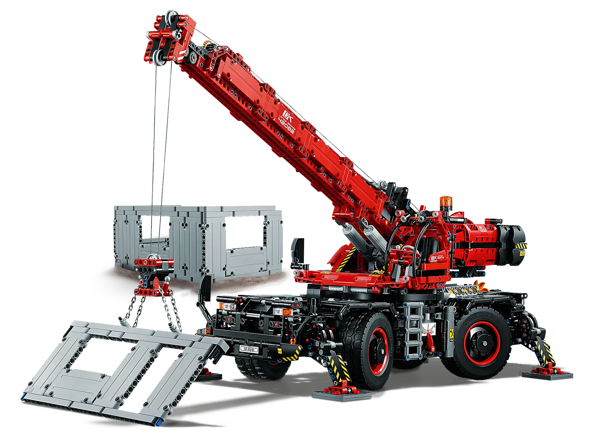
Toujours dans le cadre de l'expérimentation des mouvements avec des pièces LEGO, nous avons aussi trouvé judicieux d'investir dans certaines documentations de l'AFOL JK Brickworks (Site, YouTube, Instagram, Facebook, Rebrickable). Ses animations ont toujours été une fascination pour nous.
Nos débuts en électronique
En parallèle, nous avons choisi d'apprendre les bases de la technologie Arduino, pensant que nous pourrions contrôler le moteur de notre train. Rappelons-le, ce dernier appartient au système 9V.
Beaucoup de lectures furent nécessaire pour nous lancer sur ce sujet complexe et épineux qu'est la motorisation, ainsi que divers achats de composants électroniques, tels que des câbles, des résistances, où même des LEDs.
Nous avons également essayé différents moteurs, notamment ceux du fabricant Circuit Cubes.
{kind=link}
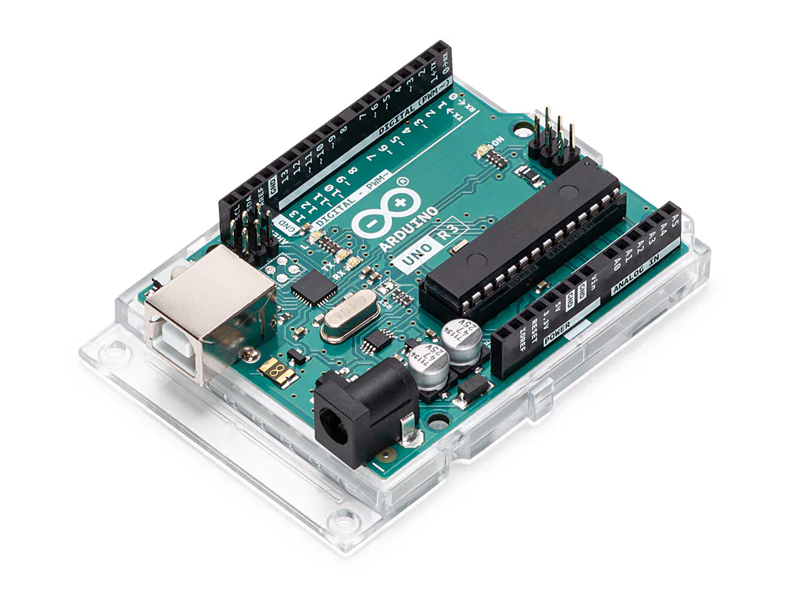
{kind=link}
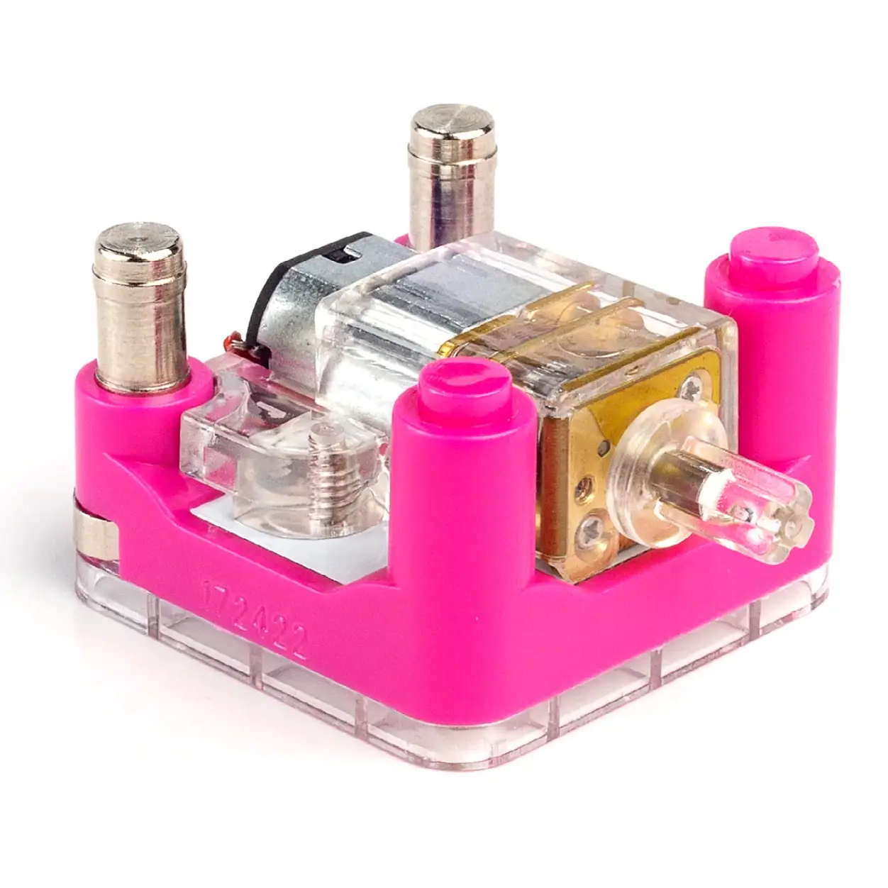
Un constat des plus décevants
Les semaines ont défilé et ce n'est qu'à la fin du mois de juin que nous avons dû nous rendre à l'évidence : nous avions fait du sur-place. Quel comble quand on parle de mouvements !
Cette révélation eut quelque chose de désarmant, comme si le temps s'était écoulé sans nous laisser la moindre trace tangible de nos efforts.
Aucune nouveauté
La frustration était immense. Nous nous étions dispersés dans une multitude d'idées. Nous avions accumulé les achats, la théorie, des connaissances utiles, certes, mais sans véritable mise en pratique.
Même si nous avions documenté avec soin l'avancée de nos recherches, il nous était impossible de publier quoi que ce soit en l'état : trop peu de sources, un nombre d'images insuffisant et, surtout, aucune implémentation concrète sur notre Brick Winter Burrow.
En début d'année, nous avons par exemple appris à réparer les câbles du système 9V. Il nous a été possible d'expérimenter plusieurs méthodes, tester différents fournisseurs, mais la rédaction d'articles à ce sujet nous a finalement pris bien plus de temps que nous l'avions imaginé.
{kind=link}
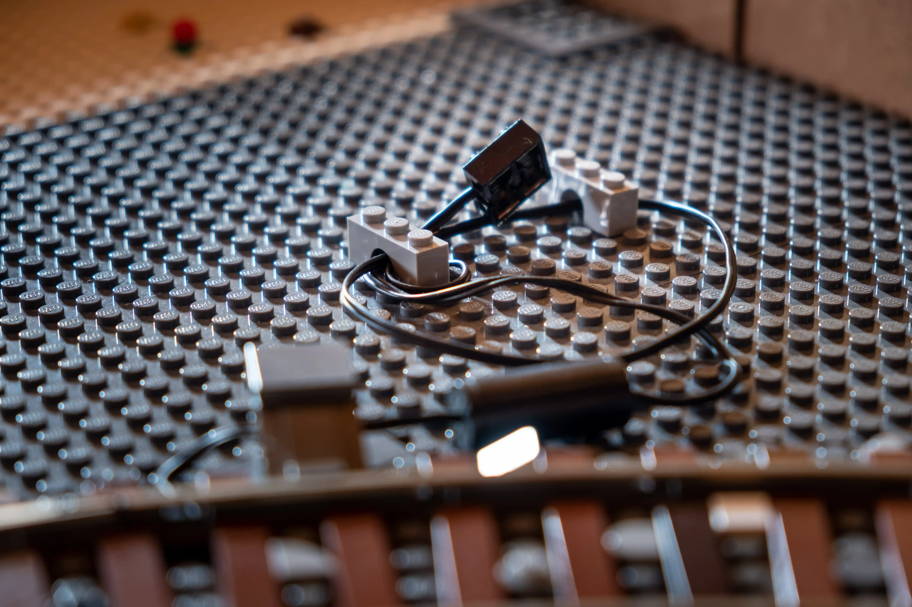
Planification désastreuse
À cela s'est ajoutée une mauvaise anticipation de nos participations à divers événements publics. En effet, nous n'avions pas sélectionné où et quand nous pourrions exposer en 2025.
À titre d'exemple, nous pensions retourner dans la Vallée du Lot pour la "Cahors Bricks Expo 2025"7, tant notre expérience l'année passée avait été merveilleuse (cf. article "Retour exposition : Cahors Bricks Expo 2024"). Ce n'est qu'en regardant nos agendas respectifs que nous avons réalisé qu'il serait impossible de nous y rendre.
{kind=link}
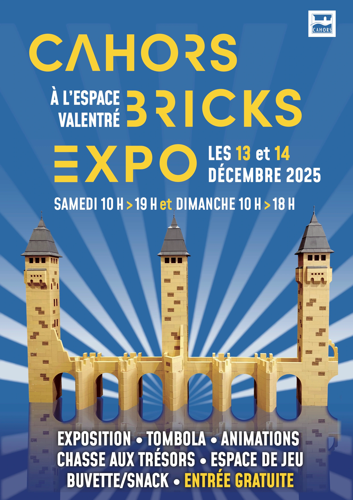
Notre seule occasion de nous retrouver face à un public était avec le "Boc'N'Geek 2025"1. Ce dernier allait se dérouler dans 8 semaines, et nous étions déçus de nos travaux ; aucune avancée sur notre diorama, rien de nouveau à montrer. Le Terrier était resté identique à ce qu'il était fin 2024.
Connexions électriques détruites
Pour couronner le tout, le transport en voiture d'une partie de notre diorama chez l'un d'entre nous s'est avéré désastreux. Notre marché a effectivement été gravement endommagé malgré toutes nos précautions.
La quasi-totalité des connexions électriques ne fonctionnait plus et plusieurs LEDs s'étaient débranchées.
{kind=link}
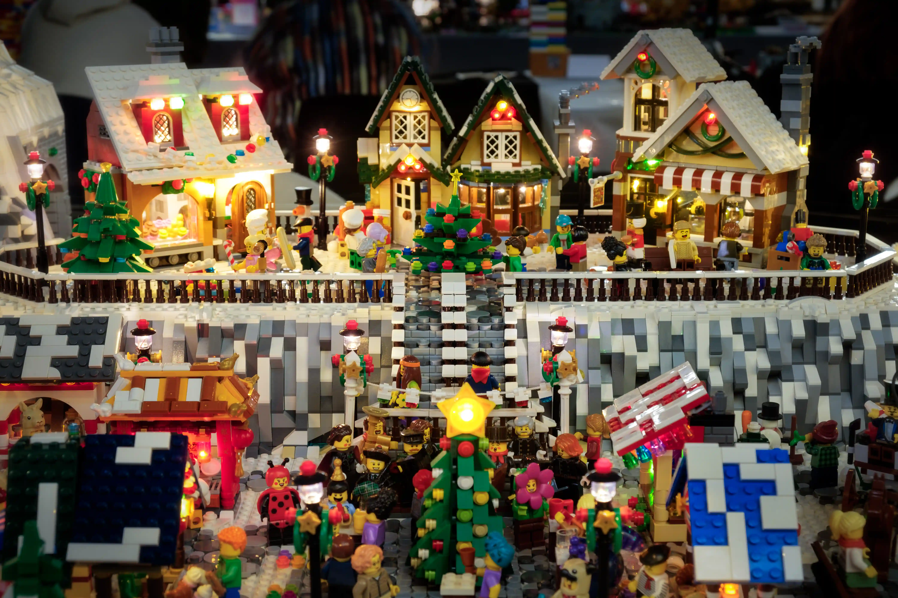
Burnout avec la brique
À la mi-année, nous étions donc dans une situation catastrophique :
- Un Brick Winter Burrow en lambeaux, à peine reconnaissable
- Des connections électriques arrachées, certaines nécessitant de nouvelles soudures
- La seule exposition à laquelle nous pouvions participer était dans 2 mois
- Nous n'avions aucune nouveauté à montrer au public
À cette période, notre frustration déjà grandissante s'était transformée en un combo malsain de dégoût et de stress. Toucher à une brique semblait être une tâche insurmontable.
Devions-nous arrêter ?
Le Brick Winter Burrow avait toujours été un moment de partage, de bonheur (cf. chapitre "La genèse" de la partie "Histoire du Terrier"). Certes, nous avons toujours eu quelques coups durs avant nos manifestations publiques, mais cette fois-ci, en cet été 2025, cela semblait trop.
Nouveau départ ?
La brique fut donc mise de côté pendant quelque temps. Faute d'inspiration et d'enthousiasme, les tenons ont pris la poussière durant plusieurs semaines.
Responsabilités vis-à-vis de nos pairs
Pourtant, malgré nos doutes, il nous fallait trancher rapidement. En tant que membres de la Brick Team Aquitaine (cf. article "Nous rejoignons la Brick Team Aquitaine"), nous devions annoncer notre éventuelle participation au "Boc'N'Geek 2025"1. Serions-nous exposants ?
Grâce aux différents soutiens de cette association, nous avons retrouvé une certaine motivation. Nous nous sommes alors accordé 2 semaines pour redresser la situation :
- Si, dans ce délai, nous parvenions à remettre sur pied notre village, nous donnerions notre feu vert à Guillaume Guérineau (Instagram, Facebook), responsable de l'évènement
- Dans le cas contraire, 2025 deviendrait la première année où nous renoncerions à participer à une exposition
{kind=link}
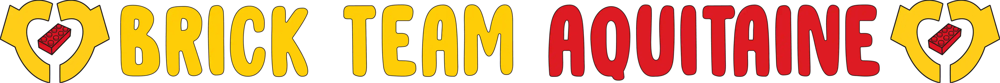
Dernière ligne droite
Nous avons alors retroussé nos manches et enchaîné les soirées consacrées à la brique. Le tout pour le tout.
Chaque moment libre était dédié au Brick Winter Burrow. Les week-ends, les journées de quinze à seize heures étaient même devenues la norme ! Nous savions que nous nous engagions là dans un sprint final, un véritable rush.
Et malgré toutes ces péripéties, nous avons finalement pu revenir vers la Brick Team Aquitaine avec ce message : "Oui, nous serons finalement de la partie !".
{kind=link}
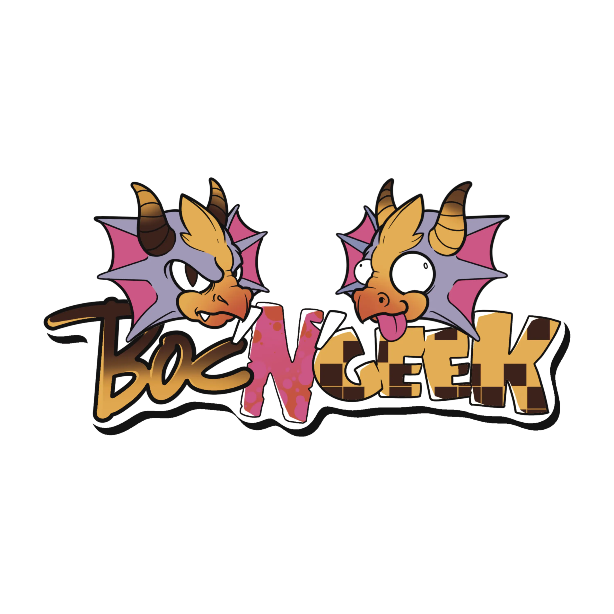
De nombreuses nouveautés ont ainsi vu le jour dans notre village. Même si la liste exhaustive figure dans notre article "Retour exposition : Boc'N'Geek 2025", rappelons qu'en un laps de temps particulièrement court, nous avons réussi à :
- Monter et intégrer un nouveau modèle, la chocolaterie sobrement baptisée "The Art of Chocolate" (Set
910039) - Reconstruire l'ensemble de nos modules MILS en les rendant plus solides, mieux emboîtables et dotés d'une gestion des câbles bien plus efficace
- Remplacer une grande partie des connecteurs WAGO par des broches pogo ("pogo pins" ou "spring-loaded pins" en anglais), ce qui nous a fait gagner un temps considérable lors de l'installation et du démontage
- Repenser entièrement notre système de transport grâce à des cartons plus grands et plus rigides, limitant ainsi les risques de casse de notre diorama
{kind=link}
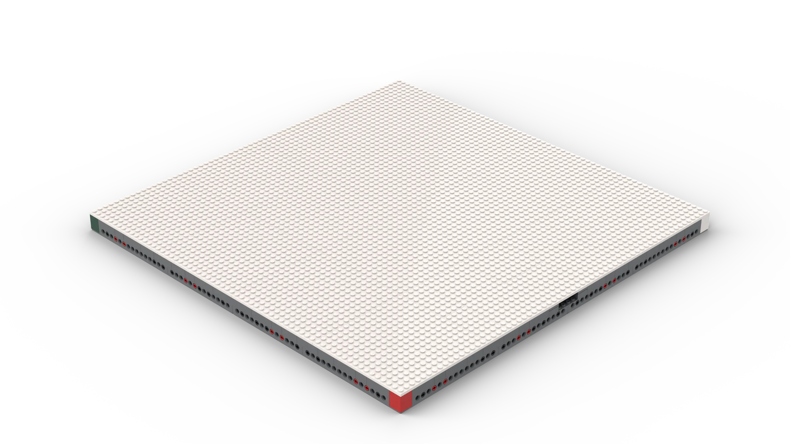
De précieuses leçons
Une fois le "Boc'N'Geek 2025"1 achevé, nous devions faire un bilan. Nous savions que l'année 2025 avait été atroce et nous devions nous remettre en question sur presque tous les sujets.
Malgré la fatigue accumulée au cours de ce long mais superbe weekend, nous voulions comprendre de nos erreurs afin de ne pas les reproduire, que ce soit pour 2026, mais aussi pour les années à venir.
La pression et le stress cumulés, sans oublier les deadlines si serrées auxquelles nous avions été confrontés, avaient fait du Brick Winter Burrow une corvée, un boulet au pied que nous nous traînions.
Il n'était plus ce pourquoi il avait été créé ; une source de moments familiaux emplis de joie, de rires, de briques manipulées avec pour seule limite l'imagination, ainsi que de longues heures dédiées à des réflexions intellectuelles, alliant l'électronique, la mécanique et l'ingénierie.
Loisir avant tout
La première leçon que nous nous efforçons désormais de garder en tête est que le Brick Winter Burrow est un projet que nous faisons pour le plaisir.
Tous les à-côtés que nous nous imposons, comme la rédaction d'articles sur notre blog ou la publication de nouvelles photos sur notre compte Instagram, doivent rester des passe-temps et non se transformer en contraintes.
Nous aimons effectivement écrire, documenter, sourcer nos recherches et partager nos trouvailles. Nous voulons publier peu de contenu, mais bien des récits de qualité.
Il en va de même avec nos images, où nous prenons le temps de mettre en avant nos minifigs avec différentes scénettes. Trier nos photos, les traiter pour certaines ; cette charge de travail supplémentaire doit être une source de moments réjouissants.
{kind=link}
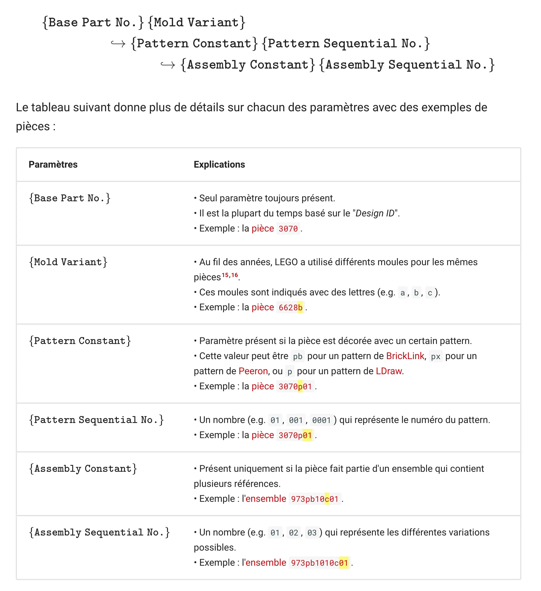
{kind=link}
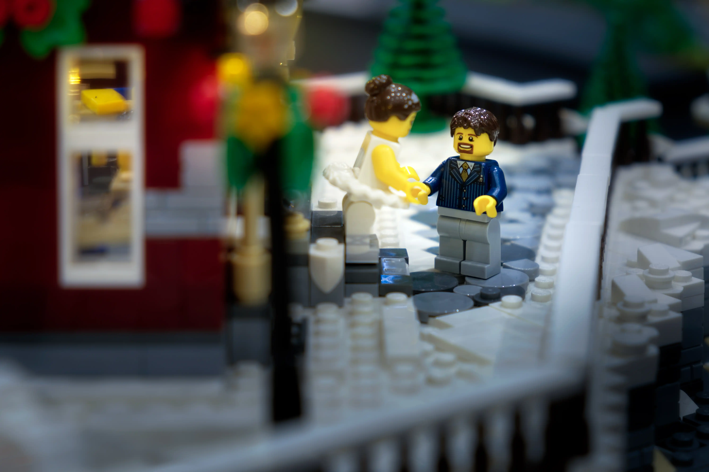
Planification différente
Le deuxième constat concerne notre planification que nous avons dû reprendre.
Depuis la création du Brick Winter Burrow, chaque début d'année a toujours été synonyme de plan, avec des objectifs souvent trop ambitieux. Nous nous rappelons de challenges tels que "Concevoir une montagne" ou "Ajouter une alimentation centralisée", ou encore "Créer un site web".
Nous avons donc revu notre façon de planifier les objectifs que nous voulions atteindre avec cette fois-ci des missions bien plus spécifiques. Nous gardons bien évidemment en tête des buts génériques comme "Participer à une autre exposition", mais en détaillant désormais davantage le "Comment ?" ou le "Quand ?".
En procédant ainsi, nous espérons avoir le sentiment de faire des petits pas constructifs vers un dessein plus grand.
Prototypage revisité
Le dernier apprentissage que nous avons tiré de cette année, et sans aucun doute le plus important, concerne notre méthode de travail. Nous avons souhaité la réexaminer de fond en comble.
Nous souhaitons effectivement essayer en 2026 une approche nouvelle pour la conception de nos modèles LEGO : l'utilisation du logiciel Studio8.
{kind=link}
Presque 10 ans avant la création du Brick Winter Burrow, nous avions déjà eu recours à des systèmes de conception assistée par ordinateur (CAO). Nous nous rappelons notamment de LDraw ou du célèbre LEGO® Digital Designer (LDD).
Bien qu'il y ait eu par la suite pléthore de programmes similaires9,10, nous avons perdu intérêt à suivre les avancées en la matière. Pour nous, la brique restait quelque chose que nous prenions plaisir à toucher, que nous devions manipuler avec nos mains.
C'est la raison pour laquelle chaque conception dans notre village, allant de l'arche de bienvenue jusqu'à la montagne, s'est d'abord faite dans nos têtes pour ensuite être construite. Nous ne sommes d'ailleurs pas les seuls à procéder ainsi11.
Bien entendu, il y a parfois eu quelques croquis, certaines créations venaient même de MOCs disponibles sur le site Rebrickable, mais jamais nous n'avons utilisé un ordinateur pour du prototypage.

Au cours de l'année 2025, les choses ont légèrement évolué. Ayant entendu certains de nos homologues de la Brick Team Aquitaine parler de Studio8 de manière positive, nous avons mis nos expériences passées de côté et avons commencé à le prendre en main.
Notre progression fut assez rapide :
- Nous avons commencé par reproduire des créations de petites tailles, comme nos lampadaires ou nos ballastes
- Ayant pris confiance, nous nous sommes ensuite attelés à la conception de structures plus complexes. Il nous aura fallu presque un mois pour explorer les fonctionnalités les plus complexes comme "Stability"12 ou "Collision"13
- Arrivés à la mi-novembre, plus à l'aise avec le logiciel, nous avons tenté de concevoir une nouvelle entrée de notre tunnel, plus courbée cette fois-ci. Nous avons finalement abandonné le projet, car celle-ci s'est révélée être trop fragile
{kind=link}
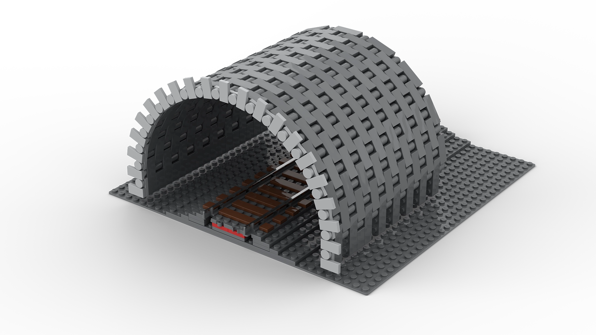
Force est de constater qu'après un certain temps d'adaptation, le logiciel devient fluide et agréable à l'emploi. Il rend en réalité la création de modèles beaucoup plus accessible14.
Comme d'autres AFOLs le soulignent parfois, Studio8 présente l'avantage d'avoir un stock de pièces illimité15 avec des références que nous ne possédons parfois pas en physique. Aussi, l'indication du prix des références16,17 présente un avantage majeur dans la gestion de notre budget annuel.
Toutes ces raisons nous ont donc convaincus de passer par la "case Studio8", si on peut l'appeler ainsi.
Quelques succès
Malgré toutes ces mésaventures, ce n'est qu'en relisant les objectifs que nous nous étions fixés l'année précédente, dans notre article "Bilan 2024", que nous avons constaté, non sans surprise, que nous étions parvenus à avancer. Du moins, en partie.
Effectivement, avec le "Boc'N'Geek 2025"1 et les préparations nécessaires pour participer à cet évènement, nous avons exposé le Brick Winter Burrow pour une troisième année consécutive. Les connectiques pour nos modules MILS ont été améliorées, même si nous pensons que d'autres options intéressantes18 sont encore à expérimenter.
{kind=link}
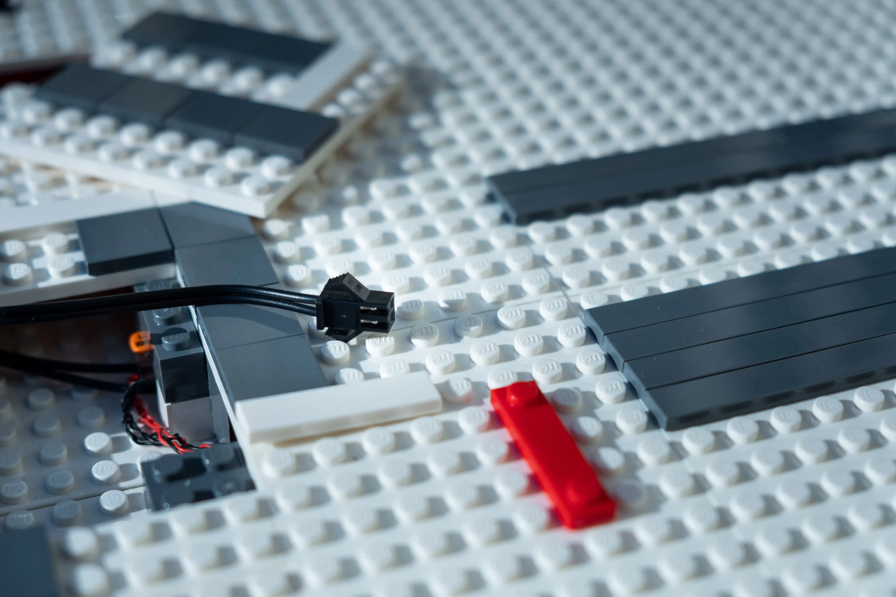
{kind=link}
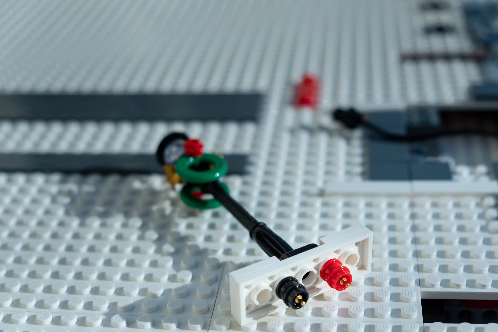
Aussi, bien que nous n'ayons pas trouvé le temps de nous inscrire sur des plateformes plus spécialisées, comme Pinterest ou Flickr, nous avons réussi à alimenter notre compte Instagram à raison de deux photos par semaine. Nous avons été ravis de pouvoir mettre en avant les créations de certains de nos collègues AFOLs et maintenir cette fréquence de publication tout au long de l'année.
Nous comptons renouveler ce rythme pendant l'année 2026, en postant notamment des photos de gens qui nous inspirent, comme Alex Winter Village (Instagram, Facebook, YouTube) que nous avons mentionné plus tôt, mais aussi Marie et Nanta qui se cachent derrière le pseudonyme Parisianbrick (Instagram, Facebook, YouTube).
{kind=link}
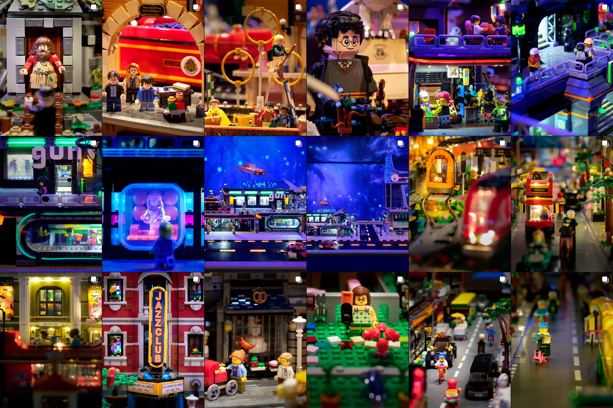
Il n'en reste pas moins que ces objectifs ont été accomplis sous la contrainte et un stress quasi permanent.
Nos projets pour 2026
Ainsi se clôt notre troisième année passée aux côtés du Brick Winter Burrow. Il s'agit, sans conteste, de la plus dense et de la plus éprouvante.
Si elle fut jalonnée de petites victoires et de progrès notables, elle a surtout rendu indispensable une véritable remise en question. Cette introspection, laborieuse par moments, s'est révélée salutaire.
Forts des enseignements récoltés, nous avons aujourd'hui pu définir des objectifs plus clairs, réalistes et, nous l'espérons, pleinement réalisables. Quels sont-ils ?
Améliorer le Brick Winter Burrow
Participer à une quatrième exposition.
Avec nos nouveaux cartons, la refonte de nos modules MILS ainsi qu'une avancée considérable sur notre réseau électrique, nous nous sentons désormais plus confiants à l'idée de reprendre la route afin d'exposer notre diorama.
Nous aimerions partager cela une nouvelle fois à un public averti grâce à la Brick Team Aquitaine. Même si nous avons apprécié la diversité des animations du "Boc'N'Geek 2025"1, qu'il s'agisse des cosplays19,20 ou des spectacles21, en 2026, nous aimerions être exposants à un évènement uniquement dédié aux LEGO.
Nous sommes convaincus que ce sont précisément dans ces rassemblements consacrés à la brique que nous recevrons les avis les plus éclairés, ainsi que des critiques réellement constructives concernant les évolutions possibles de notre diorama.
{kind=link}
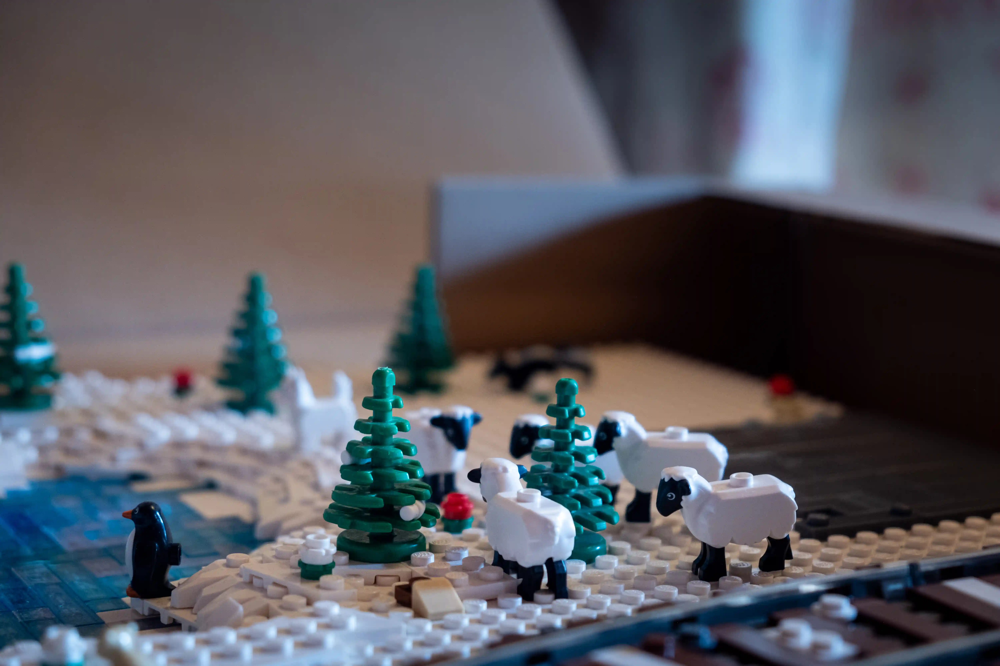
Fermer quelques bâtiments.
Afin de créer un meilleur contraste avec les illuminations, nous voulons essayer d'ajouter des cloisons dans quelques-uns de nos modèles. Pour n'en citer qu'un, nous pensons à la "Winter Village Station" (Set 10259) que nous aimerions rendre plus modulaire.
Si nous trouvons l'expérience concluante, nous pensons nous orienter sur d'autres modèles, tels que le "Winter Village Post Office" (Set 10222) ou le "Winter Toy Shop" (Set 10249). À noter que ces modifications nécessiterait de revoir en profondeur le support sur lesquels ces bâtiments sont posés.
Réduire les frictions du train.
Un dernier point sur lequel nous aimerions nous attarder en 2026 est celui du train, et plus particulièrement, la friction.
Bien que nous soyons ravis d'être passés au système 9V, nous pensons que nous pouvons réduire les efforts des roues sur les rails. Une analyse comparative des générations de supports de roues semble être nécessaire, notamment pour comprendre les différences entre le "Train Wheel RC, Holder" (Réf. 2878) et le "Train Wheel RC, Holder with Pin Slots" (Réf. 38339).
{kind=link}
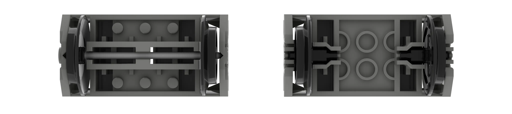
Aussi, bien que nous soyons à la frontière du bricolage avec ce sujet, nous aimerions voir si l'ajout de roulements à billes, comme l'ont fait certains AFOLs22,23,24,25, est un réel plus.
Poursuivre notre exposition sur les réseaux sociaux
Continuer d'alimenter notre compte Instagram.
Nous l'évoquions quelques lignes plus haut, nous avons réussi à publier deux photos par semaine tout au long de l'année. Partager des nouvelles de notre aventure est toujours important à nos yeux, mais montrer les créations d'autres AFOLs l'est tout autant.
Cela reste néanmoins un challenge ; comment montrer un diorama dans toute sa splendeur, quel élément choisir, comment le mettre en valeur, etc.
Instagram est aussi notre vitrine sur le web la plus accessible et avec laquelle nous entrons en contact avec d'autres. Il est donc important pour nous de maintenir ce réseau social en particulier.
{kind=link}
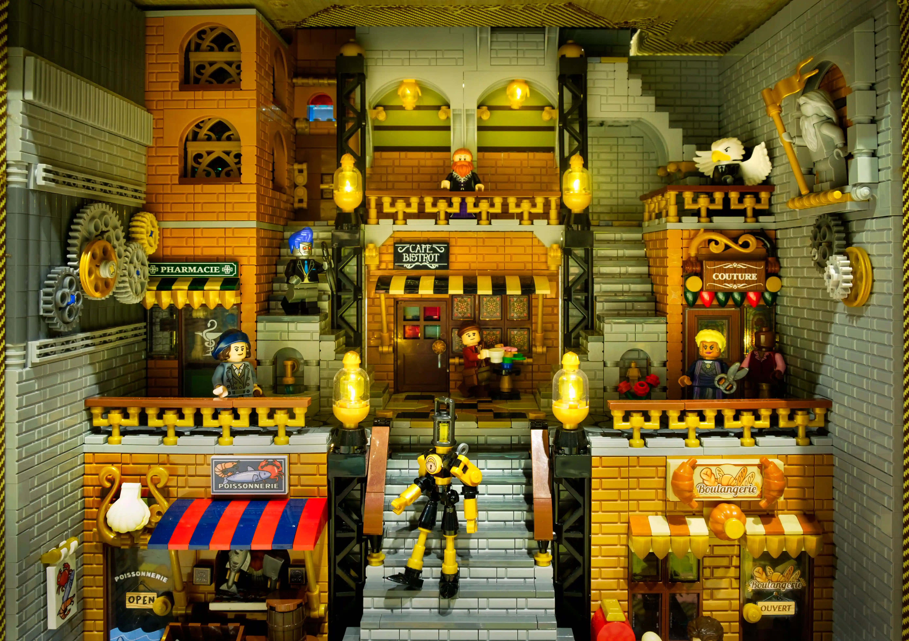
{kind=link}
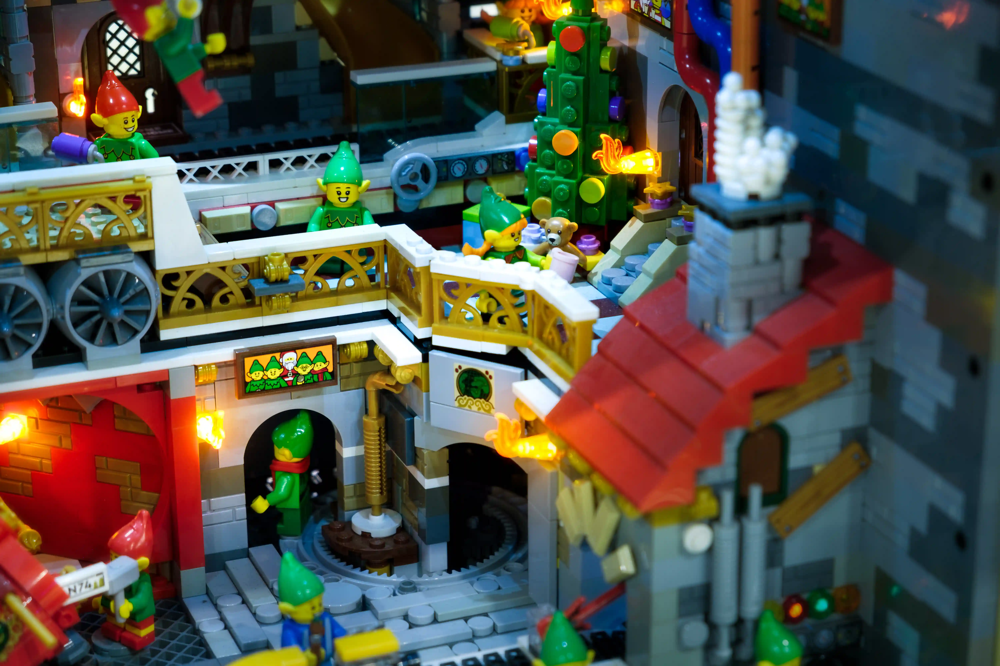
Créer notre compte Facebook.
Au lancement du Brick Winter Burrow, nous avions volontairement écarté cette plateforme, pensant à tort qu'elle s'adressait principalement aux personnes de plus de 55 ans, et qu'elle correspondait donc peu à un public passionné par les LEGO26,27. Nous faisions fausse route28,29.
En effet, en 2025, Facebook demeurait la plateforme la plus utilisée par tous types d'internautes30,31. Pour élargir nos contacts et nous ouvrir à d'éventuels partenariats, nous considérons désormais la création d'un compte comme une étape nécessaire.
Redonner vie à notre site
Publier davantage de contenu sur notre blog.
Cette dernière année fut effectivement pauvre en termes de nouveautés sur notre blog. Pour rappel, seulement trois articles furent dévoilés au cours de ces 12 derniers mois :
Nous aimerions remédier à cela. Se fixer un objectif de publication ne nous semble pas être la bonne approche. C'est pourtant ce que nous avions fait l'année passée (cf. article "Bilan 2024"), à raison d'un article par mois, et réitérer cette fréquence soutenue nous a probablement découragé en 2025.
Car nous éprouvons un réel plaisir à rédiger des articles plus développés. Que ce soit nos comptes rendus d'expositions conçus comme de petits récits, ou nos bilans annuels que nous abordons comme un véritable exercice d'analyse, à l'image du présent texte, nous apprécions aller dans le détail.
Quoi qu'il en soit, notre volonté demeure inchangée ; nous voulons proposer un contenu de qualité sur notre blog.
{kind=link}
Lancer une nouvelle partie.
Bien que nous ayons écrit du contenu en 2025, nous pensons qu'il s'agit encore de brouillons qui ne méritent pas d'être publiés. Nous espérons qu'en 2026, nous serons suffisamment satisfaits de nos écrits pour enfin les partager à la communauté.
La cerise sur le gâteau serait de lancer une nouvelle partie, comme nous l'avions fait en 2024 avec l'"Histoire du Terrier".
{kind=link}
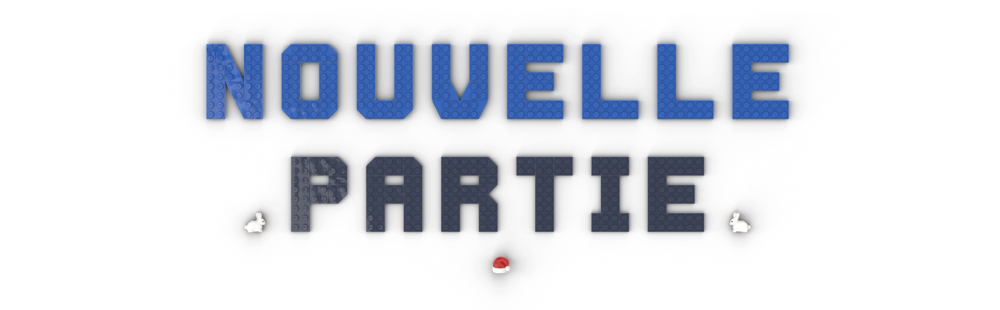
Construire plus efficacement
Trier l'ensemble des pièces supplémentaires.
L'achat de la "Rough Terrain Crane" (Set 42082), évoqué au début de cet article, s'est finalement révélé être une erreur. Disposer de davantage d'éléments de la gamme Technic pour le prototypage n'est certes pas problématique en soi, mais un tel stock devient rapidement difficile à manipuler.
Par ailleurs, depuis l'acquisition de plusieurs modèles de la Winter Village Collection (cf. chapitre "En quête des sets" de la partie "Histoire du Terrier"), nous n'avons jamais pris le temps de trier toutes les pièces additionnelles fournies par la marque danoise, pièces destinées à compenser certaines contraintes de poids32,33.
En groupant toutes ces références et en les ajoutant à notre stock existant (cf. chapitre "Notre LEGO room" de la partie "À Propos"), nous pourrons ainsi minimiser les commandes sur des sites comme Pick a Brick ou BrickLink.
{kind=link}
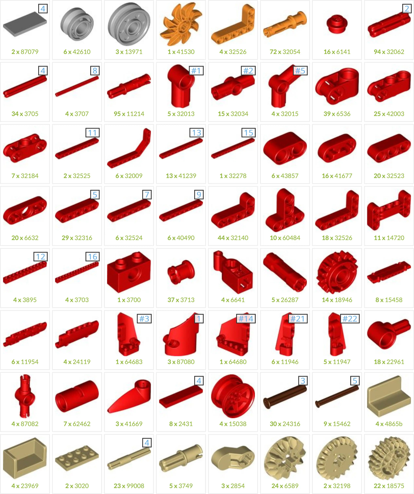
Réaliser nos nouveaux projets sur Studio8.
En parallèle de ce tri, nous allons tenter de concevoir toutes nos créations à l'aide du logiciel Studio8.
Comme expliqué précédemment, nous avons réussi à prendre cet outil en main au cours de l'année et nous comptons développer davantage nos connaissances en 2026. Nous avons réussi à concevoir des prototypes toujours plus gros et imposants.
Vers la mi-mai, nous nous étions par exemple penchés sur le problème de la surélévation de nos modules MILS, afin de pouvoir placer des câbles et pourquoi pas des moteurs, comme le "White Electric, Motor Boost Interactive" (Réf. bb0893c01) du système Powered UP. Projet que nous avons mis en pause par la suite.
{kind=link}
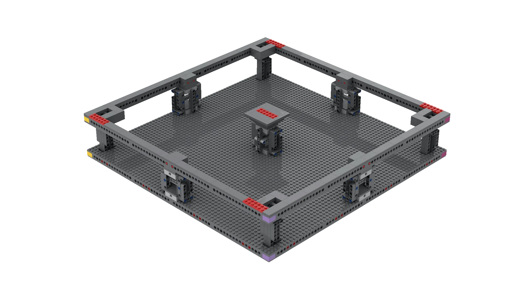
S'ajoute également une fonctionnalité que nous avons découverte un peu tard, mais qui devrait nous être très utile. Avec ce logiciel, il y a en effet la possibilité de construire différents modèles de la Winter Village Collection, soit en important simplement les pièces nécessaires34, soit en important directement le modèle déjà monté35,36,37, bien que cela ne fonctionne que pour certains sets38,39,40.
Partager nos créations entre nous devrait aussi se faire de manière simple et quasi immédiate. Une réelle avancée en termes d'efficacité !
Sources
BrickNerd: Christmas in July, A Motorized Whimsical Winter Village (Archive) ↩
The Brothers Brick: The biggest LEGO Technic set ever - 42082 Rough Terrain Crane (Archive) ↩
Game of Bricks: Top 25 Biggest LEGO Technic Sets (Archive) ↩
LEGO Ambassador Network: Cahors Bricks Expo 2025 (Archive) ↩
Reddit: What is the difference between these LEGO software? (Archive) ↩
Eurobricks Forums: Does Studio make creating Technic MOCs easier? (Archive) ↩
Medium: Help, I can't stop building digital LEGO sets (Archive) ↩
Reddit: What is good to know as a beginner building for modeling for the first time? (Archive) ↩
La Nouvelle République: Le cosplay sur le devant de la scène de Boc'N'Geek à Bressuire (Archive) ↩
Ouest-France: Bressuire. Les 5 raisons d'aller au le festival Boc'N'Geek (Archive) ↩
Eurobricks Forums: Axle Bearings - best mod ever (Archive) ↩
Doctor Brick: Bricktracks Achsen und Räder, Kugellager (Archive) ↩
Jay's Brick Blog: Decade In Review - The Decade of the AFOL (Archive) ↩
Statista: Share of Facebook users in the United States as of June 2025, by age group (Archive) ↩
Giraffe Social: Age Distribution of Facebook Users (Archive) ↩
Statista: Most popular social networks worldwide by number of monthly active users (Archive) ↩
RecurPost: Instagram vs Facebook - Comparing Social Media Marketing Giants (Archive) ↩
Nanoblock: Find The Answer To The Commonly-Asked Question, "Why Do Lego Sets Have Extra Pieces?" (Archive) ↩
Reddit: Are the extra pieces in LEGO sets always the same? (Archive) ↩
Studio Help Center: Import a LEGO set in the viewport (Archive) ↩
Brick System Brothers: Import Official Sets in LEGO Digital Designer ↩
Brick System Brothers: Import Pre-built LEGO Sets to Studio ↩
BrickLink: Studio Gallery - "10259 - Winter Village Station" ↩
BrickLink: Studio Gallery - "10339 - Santa's Post Office and Truck" ↩